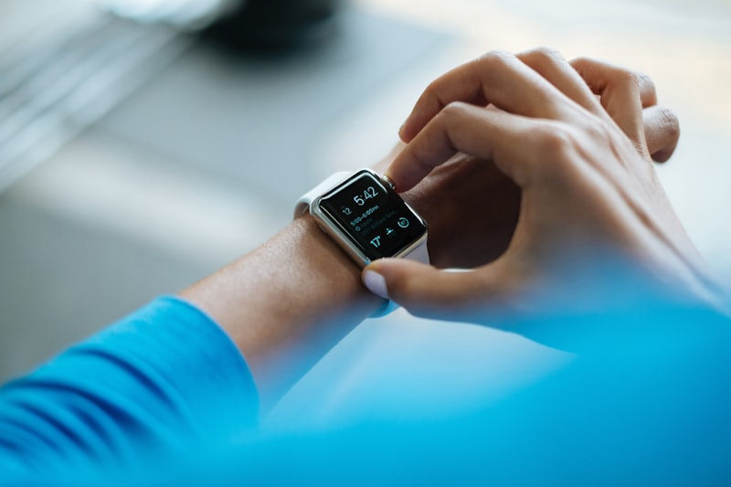

Semua layar di halaman ini dibangun dari token yang sama dengan design-system.md. Judul dan kutipan konten
diambil apa adanya dari 20 berkas di folder content/. Mode terang saja.
| Bagian | Sebelumnya | Sekarang |
|---|---|---|
| Bottom tab | Tinggi 64, sudut label terpotong lengkung bingkai | Tinggi 86 dengan ruang aman 22 di bawah, sudut mengikuti lengkung layar, ditambah garis indikator |
| Beranda, ringkasan | Dua kotak angka | Cincin harian tiga lingkaran — Gerak, Tidur, Mood — mengikuti pola Huawei Health, ditambah tiga angka pendukung |
| Beranda, penyaring | Chip kategori dan pil tipe konten yang mirip | Chip kategori tetap pil dan bisa digeser; tipe konten jadi tab bergaris bawah supaya jelas berbeda |
| Beranda, header | Hanya avatar | Tombol pintas ke Favorit di samping avatar |
| Detail konten | Tombol simpan selebar layar menempel di bawah | Ikon bookmark 40px di bilah atas, bersama tombol bagikan |
| Detail konten | Hanya versi artikel | Tiga versi: artikel, video dengan pemutar YouTube, infografis dengan gambar tinggi yang bisa diperbesar |
| Favorit | Tombol bookmark di tiap baris | Geser baris ke kiri untuk memunculkan tombol hapus |
| Catatan harian | Form panjang di atas, riwayat tertutup di bawah | Riwayat mengisi seluruh halaman; pencatatan pindah ke lembar terpisah |
| Menambah catatan | Form gabungan berisi semua kolom | Tombol tambah mengambang di Beranda dan Catatan Harian, membuka enam pilihan spesifik |
| Kartu riwayat | Satu kartu berisi semua angka | Satu kartu per jenis aktivitas, dengan warna dan gambar latar sesuai jenisnya |
| Profil | Ada kotak jumlah favorit dan catatan | Dua kotak itu dihapus |
| Sebelum login | Langsung Login | Ada halaman landing publik berisi tujuan aplikasi dan cuplikan konten |
| Mood | Jenis catatan tersendiri, diisi lewat baris emoji di form | Bukan jenis tersendiri. Mood hanya dicatat di akhir sesi latihan pernapasan, mengikuti pola Huawei Health |
| Lingkaran ketiga cincin harian | Mood | Relaksasi — terisi kalau sesi latihan pernapasan hari itu sudah dijalani |
| Kartu aktivitas | Empat contoh | Enam jenis lengkap, ditambah tabel kunci database, satuan, warna, dan cara mengisinya |
| Lembar tambah catatan | Satu contoh | Enam lembar lengkap; lima memakai pengatur angka dengan langkah berbeda, satu memakai pilihan durasi sesi |
| Gambar mockup | Ditarik dari Unsplash saat halaman dibuka | Disimpan di design/img/ dan dirujuk secara relatif, jadi tidak perlu jaringan |
#0E6E49#128A5B#19A96F#DCF3E8#F2762E#FDE8DA#12211B#84968D#E2EBE6#F6FBF8#D2453CEnam warna ini hanya dipakai di kartu riwayat, cincin harian, dan lembar pencatatan. Di luar itu, layar tetap hijau dan jingga.
#F2762E#19A96F#2D7FF9#7A5AF8#0E9DA8#C9820ASebelumnya chip kategori dan pil tipe konten terlihat mirip dan membingungkan. Sekarang kategori tetap berbentuk pil yang bisa digeser, sedangkan tipe konten memakai tab bergaris bawah — bentuk, warna, dan posisinya berbeda jauh.
Mengikuti pola tiga lingkaran Huawei Health. Ukuran tiap lingkaran naik seiring capaian terhadap target harian, dan bagian yang bertumpuk menggelap sehingga terlihat sebagai satu bentuk utuh. Tiga sumbunya: Gerak gabungan langkah dan menit olahraga, Tidur jam tidur, dan Mood catatan suasana hati.
Satu kartu untuk satu catatan. Enam jenis di bawah ini adalah seluruh jenis yang bisa dicatat aplikasi; tidak ada jenis lain. Tiap jenis punya warna, ikon, satuan, dan gambar latar samar sendiri, sehingga riwayat bisa dipindai sekilas tanpa membaca teksnya.
| Jenis | Kunci di database | Satuan | Warna | Cara mengisi |
|---|---|---|---|---|
| Langkah | steps | langkah | #F2762E | Input angka bulat dengan papan tombol, ditambah tiga pintasan cepat |
| Olahraga | exercise | menit | #19A96F | Input angka bulat dengan papan tombol, ditambah tiga pintasan cepat |
| Air minum | water | gelas | #2D7FF9 | Input angka bulat dengan papan tombol |
| Tidur | sleep | jam | #7A5AF8 | Input angka desimal dengan papan tombol berkoma |
| Latihan pernapasan | breathing | menit | #0E9DA8 | Pilih durasi lalu jalani sesi; mood dicatat di akhir sesi |
| Berat badan | weight | kg | #C9820A | Input angka desimal dengan papan tombol berkoma |
breathing, bukan sebagai catatan terpisah. Jadi tidak ada tombol "catat mood"
yang berdiri sendiri di mana pun.Satu lembar hanya mengisi satu jenis. Lima jenis pertama memakai satu input angka yang memunculkan papan tombol hanya saat sedang diisi. Latihan pernapasan tidak memakai pengatur angka sama sekali, karena angkanya lahir dari sesi yang dijalani, bukan diketik.
Di mobile, baris favorit digeser ke kiri untuk memunculkan tombol hapus. Di web tidak ada gestur geser, jadi tombol hapus muncul saat kursor berada di atas baris.
Sembilan layar dalam lima belas bingkai. Landing bisa dibuka tanpa login. Detail konten digambar tiga kali karena tampilannya berbeda untuk artikel, video, dan infografis. Beranda punya bingkai tambahan untuk tombol tambah yang terbuka, Catatan Harian punya bingkai lembar pencatatan, dan latihan pernapasan punya dua bingkai: sesi yang sedang berjalan dan pencatatan mood di akhir sesi.
1 · Landing, tanpa login
Artikel, video, dan infografis dari Kementerian Kesehatan RI, WHO, dan sumber tepercaya lain — plus catatan aktivitas harian Anda sendiri.
Daftar gratisCUPLIKAN KONTEN
Daftar dulu untuk membuka seluruh konten.
2 · Register
Daftar dulu untuk membuka semua artikel, video, dan infografis kesehatan.
Sudah punya akun? Masuk
3 · Login
Masuk untuk melanjutkan
Belum punya akun? Daftar
4 · Beranda
Manfaat Jalan Kaki 30 Menit Setiap Hari
Olahraga tidak selalu harus berat. Jalan kaki rutin selama 30 menit sehari sudah cukup memberi manfaat nyata bagi tubuh.
5 · Tombol tambah terbuka
6 · Detail konten — artikel
Olahraga · 5 menit baca · Tim Healthy Life
Olahraga tidak selalu harus berat. Jalan kaki rutin selama 30 menit sehari sudah cukup memberi manfaat nyata bagi tubuh, terutama bagi orang yang jarang bergerak karena pekerjaan.
Jalan kaki teratur membantu menjaga tekanan darah, melatih jantung, dan menurunkan risiko penyakit tidak menular.
Mulailah dari sepuluh menit, lalu tambah lima menit tiap minggu sampai terbiasa.
7 · Detail konten — video

Olahraga · 2 menit · CNN Indonesia
Video ini menjelaskan bagaimana kebutuhan dan manfaat olahraga bisa berbeda-beda tergantung kelompok usia.
Anak dan remaja butuh aktivitas yang melatih pertumbuhan otot dan tulang. Orang dewasa memerlukan aktivitas aerobik untuk menjaga jantung. Lansia dianjurkan menambah latihan keseimbangan.
8 · Detail konten — infografis
Gizi Seimbang · 3 menit
Infografis ini merangkum pembagian porsi makanan pokok, sayur, buah, dan lauk pauk dalam satu piring.
Setengah piring diisi sayur dan buah. Setengah sisanya dibagi antara makanan pokok dan lauk pauk.
9 · Favorit, satu baris digeser
10 · Catatan harian
11 · Lembar tambah catatan — angka bulat
HARI INI · 15 AGUSTUS
11b · Lembar tambah catatan — desimal
HARI INI · 15 AGUSTUS
12 · Sesi latihan pernapasan
Ikuti lingkarannya. Tarik napas saat membesar, buang napas saat mengecil.
13 · Akhir sesi, catat mood
HARI INI · 15 AGUSTUS
Delapan halaman. Yang berubah dari mobile hanya navigasi dan jumlah kolom. Tombol tambah mengambang diganti tombol biasa di header, dan gestur geser diganti tombol hapus yang muncul saat kursor berada di atas baris.
1 · Landing, tanpa login
20 artikel, video, dan infografis dari Kementerian Kesehatan RI, WHO, dan sumber tepercaya lain. Simpan yang penting, lalu catat aktivitas harian Anda sendiri.
CUPLIKAN KONTEN
Daftar dulu untuk membuka seluruh konten.
2 · Register
20 artikel, video, dan infografis dari sumber tepercaya. Simpan yang penting, catat aktivitas harian Anda.
Registrasi wajib sebelum membuka konten.
Sudah punya akun? Masuk
3 · Login
Favorit dan catatan harian Anda tersimpan dan hanya bisa dilihat oleh Anda sendiri.
Gunakan email dan password Anda.
Belum punya akun? Daftar
4 · Beranda
Manfaat Jalan Kaki 30 Menit Setiap Hari
Olahraga tidak selalu harus berat. Jalan kaki rutin 30 menit sehari sudah memberi manfaat nyata.
Manfaat Olahraga Sesuai Usia
Video ini menjelaskan bagaimana kebutuhan olahraga berbeda-beda tergantung kelompok usia.
Infografis Isi Piringku: Panduan Porsi Makan Sehari-hari
Merangkum pembagian porsi makanan pokok, sayur, buah, dan lauk pauk dalam satu piring.
5 · Detail konten — tipe video
Olahraga · 2 menit · CNN Indonesia
Video ini menjelaskan bagaimana kebutuhan dan manfaat olahraga bisa berbeda-beda tergantung kelompok usia, mulai dari anak-anak sampai lansia.
Anak dan remaja butuh aktivitas yang melatih pertumbuhan otot dan tulang. Orang dewasa memerlukan aktivitas aerobik untuk menjaga kesehatan jantung. Lansia dianjurkan menambah latihan keseimbangan.
KONTEN LAIN DI OLAHRAGA
6 · Favorit — baris kedua dalam keadaan disorot kursor
4 konten disimpan. Hanya Anda yang bisa melihat daftar ini.
7 · Catatan harian
Boleh mencatat beberapa kali dalam sehari. Catatan ini privat.
HARI INI · 15 AGUSTUS
14 AGUSTUS
8 · Profil
Data akun Anda.
Wiguno
wiguno@email.com
KeluarData diri
Ganti password
Tanpa login — boleh dibuka siapa saja
Landing ──▶ Register
Landing ──▶ Login
Login ⇄ Register
└── berhasil masuk ──▶ Beranda
Sudah masuk
Beranda ──▶ Detail Konten ──▶ kembali ke Beranda
Beranda ⇄ Favorit ⇄ Catatan Harian ⇄ Profil bottom tab di mobile, menu header di web
Beranda ──▶ tombol tambah ──▶ Lembar catat: Langkah, Olahraga, Air minum, Tidur, Berat badan
Catatan Harian ──▶ tombol tambah ──▶ lembar yang sama
tombol tambah ──▶ Latihan pernapasan ──▶ pilih durasi ──▶ Sesi berjalan ──▶ Catat mood ──▶ tersimpan
Beranda ──▶ ketuk lingkaran Relaksasi ──▶ jalur latihan pernapasan yang sama
Favorit ──▶ Detail Konten
Favorit ──▶ geser ke kiri ──▶ hapus dari favorit
Profil ──▶ keluar ──▶ Landing
Landing hanya menampilkan judul dan gambar sampul sebagai cuplikan.
Isi konten tetap ditutup dan hanya terbuka setelah login.
Membuka alamat konten mana pun tanpa token akan dilempar ke Login,
lalu dikembalikan ke alamat yang tadi dituju setelah berhasil masuk.
| Bagian | Mobile | Web |
|---|---|---|
| Navigasi utama | Bottom tab 4 item | Menu mendatar di header, avatar di kanan |
| Menambah catatan | Tombol mengambang di kanan bawah, membuka enam pilihan bertumpuk | Tombol "Tambah catatan" di header, membuka modal berisi enam pilihan |
| Cincin harian | Selebar layar, di bawah sapaan | Di kolom kanan, sejajar dengan pencarian dan penyaring |
| Menghapus favorit | Geser baris ke kiri, lalu ketuk ikon keranjang | Ikon keranjang muncul saat kursor berada di atas baris |
| Daftar konten | Satu kolom | Tiga kolom mulai 1024px |
| Riwayat catatan | Satu kolom kartu aktivitas | Tiga kolom kartu aktivitas, ditambah empat kotak ringkasan 7 hari di atasnya |
| Detail konten | Satu kolom, ikon simpan di bilah atas | Dua kolom, ikon simpan di kanan atas isi |